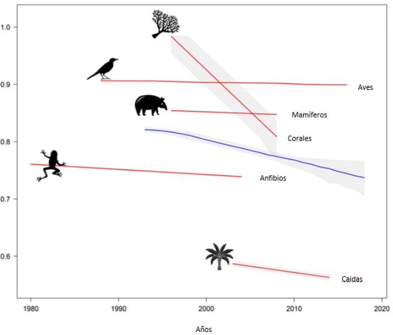

Animales en peligro de extinción
El Informe de Evaluación Global sobre Biodiversidad y Servicios Ecosistémicos de 2019 de IPBES apunta que más de un millón de especies animales y plantas estarán en peligro de extinción durante las próximas décadas. En la actualidad, la ‘Lista Roja de Especies Amenazadas’ de la Unión Internacional para la Conservación de la Naturaleza, indicador crítico de la salud de la biodiversidad mundial que se compone de la evaluación de numerosos grupos de especies, incluidos mamíferos, anfibios, aves, corales formadores de arrecifes y coníferas, recoge que de las casi 130.000 especies, más de 35.500 especies están en peligro de extinción.
| TIPO | ||||
| Anfibios | Coníferas | Corales formadores de arrecife | Mamíferos | Aves |
| 40% | 34% | 33% | 26% | 14% |

Del total de las especies evaluadas e incorporadas a esta lista, 78.126 pertenecen al reino animal. En la actualidad, 5.278 animales están en peligro de extinción y 3.395 en peligro crítico.